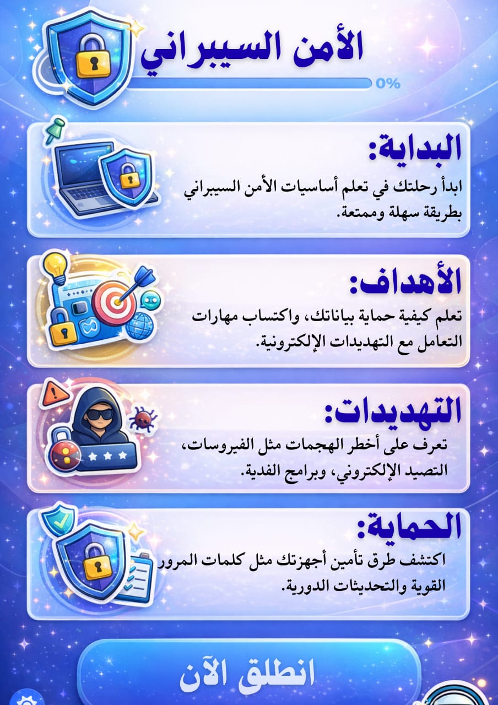
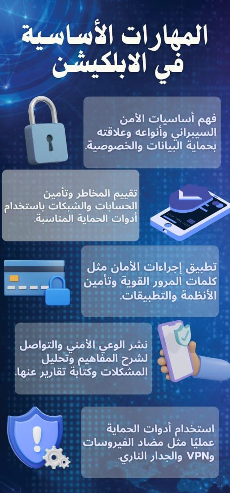

مرحباً بك في REMORA Shield Security 👋
تطبيق تعليمي يساعدك على فهم أساسيات الأمن السيبراني وحماية نفسك في العالم الرقمي.
ما هو التطبيق؟
تطبيق تعليمي يشرح أساسيات الأمن السيبراني بطريقة سهلة ومبسطة.
لماذا نتعلمه؟
لأن الأمن السيبراني أصبح مهارة أساسية لحماية معلوماتنا وحساباتنا الرقمية.
ماذا يقدم لك؟
نصائح لحماية الحسابات، فهم أنواع الهجمات، وإدارة البيانات بأمان.
نصائح مهمة
استخدام كلمات مرور قوية، تفعيل المصادقة الثنائية، وتحديث البرامج بانتظام.
📈 تقدمك في التطبيق
لقد أكملت 20% من التطبيق
📊 مهام الأمن السيبراني

🎯 أهداف البرنامج التعليمية
التعلم الشامل
تغطية جميع جوانب الأمن السيبراني من الأساسيات إلى المواضيع المتقدمة
التطبيق العملي
توفير أدوات ونماذج عملية لتطبيق المعرفة في الحياة اليومية
بناء الوعي
تطوير الوعي الأمني لدى الأفراد والمؤسسات للحد من الهجمات
التقييم المستمر
تقييم المعرفة من خلال اختبارات تفاعلية ومتابعة التقدم
🎯 الأهداف التعليمية للموديولات:
1 الموديول الأول: المفاهيم الأساسية
- فهم ماهية الأمن السيبراني وأهميته
- التعرف على أنواع التهديدات الداخلية والخارجية
- إتقان عناصر مثلث الأمن (CIA)
- التمييز بين الهجوم والتهديد والاختراق
- فهم أنواع المصادقة والتشفير
2 الموديول الثاني: التهديدات السيبرانية
- التعرف على أنواع البرمجيات الخبيثة
- فهم طرق عمل الفيروسات والديدان
- معرفة أساليب التصيد الاحتيالي
- فهم هجمات Zero-Day والهندسة الاجتماعية
- تعلم استراتيجيات الوقاية من الهجمات
3 الموديول الثالث: حماية الحسابات
- إنشاء كلمات مرور قوية وآمنة
- استخدام أدوات إدارة كلمات المرور
- تفعيل المصادقة الثنائية (2FA)
- التعرف على علامات اختراق الحسابات
- ضبط إعدادات الخصوصية في المنصات
4 الموديول الرابع: أمن الشبكات
- فهم أنواع الشبكات ومكوناتها
- معرفة بروتوكولات الاتصال والإنترنت
- التعرف على تهديدات الشبكات اللاسلكية
- إتقان أساسيات تأمين الشبكات المنزلية
- استخدام الجدار الناري (Firewall)
5 الموديول الخامس: أمن البريد والتطبيقات
- التعرف على مخاطر البريد الإلكتروني غير الآمن
- اكتشاف الرسائل الاحتيالية
- حماية التطبيقات من التهديدات
- إدارة صلاحيات التطبيقات
- الاستخدام الآمن للمتاجر الرقمية
6 الموديول السادس: الوعي والتثقيف الذاتي
- تنمية الوعي السيبراني الشخصي
- ممارسات السلوك الآمن على الإنترنت
- نشر الوعي داخل المؤسسات
- استخدام المنصات الرقمية للتعلم الذاتي
- المتابعة والتحديث المستمر
📊 المهارات الأساسية للأمن السيبراني

🛡️ تعليمات ومهارات أساسية في الأمن السيبراني
تصفح الأهداف و المهارات
اكتشف معنا أهداف هذا البرنامج وطوّر مهاراتك خطوة بخطوة نحو مستقبل أكثر أمانًا وإبداعًا في عالم الأمن السيبراني."
إتمام كل موديول قبل الانتقال للذي يليه"
"لتضمن الاستفادة القصوى من البرنامج، يجب إنهاء كل موديول بالكامل قبل الانتقال إلى الموديول التالي."
الدعم الفني هنا لمساعدتك
"يمكنك التواصل مع فريق الدعم الفني في أي وقت عند الحاجة، لنضمن لك تجربة سلسة ومريحة."
روبوت المحادثة في خدمتك
"استخدم روبوت المحادثة للحصول على إجابات سريعة لأسئلتك دون الحاجة للانتظار."
📋 تعليمات مهمة يجب الالتزام بها:
🎯 مهارات يجب أن يمتلكها مستخدم الإنترنت
🔍 مهارة اكتشاف الاحتيال:
القدرة على التمييز بين الرسائل الحقيقية والمزيفة، ومعرفة علامات التصيد الإلكتروني.
🧠 الوعي السيبراني:
فهم المخاطر الرقمية والتصرف بحكمة أثناء استخدام التطبيقات والمواقع المختلفة.
⚙️ مهارة التعامل مع الإعدادات الأمنية:
التحكم في إعدادات الخصوصية، الأذونات، وتحديثات الأمان على الأجهزة.
📚 الموديولات التدريبية
اختر الموديول الذي تريد دراسته:
الموديول 1
المفاهيم الأساسية في الأمن السيبراني
📖 7 أقسام رئيسية
الموديول 2
التهديدات السيبرانية والبرمجيات الخبيثة
📖 9 أقسام رئيسية
الموديول 3
حماية الحسابات والبيانات الشخصية
📖 محتوى شامل
الموديول 4
أمن الشبكات والاتصال بالإنترنت
📖 8 أقسام رئيسية
الموديول 5
أمن البريد الإلكتروني والتطبيقات
📖 محتوى شامل
الموديول 6
الوعي السيبراني والتثقيف الذاتي
📖 8 أقسام رئيسية
⭐ الموديول الأول: المفاهيم الأساسية في الأمن السيبراني
📊 انفوجرافيك اهداف الموديول الاول

📊 الإنفوجرافيك التفاعلي
اضغط على المصباح لرؤية الإنفوجرافيك الخاص بالموديول بتلخيص المديول
1. مفهوم الأمن السيبراني وأهميته في حماية البيانات
ما هو الأمن السيبراني؟
الأمن السيبراني هو مجموعة من الإجراءات والعمليات والتقنيات التي تهدف إلى حماية:
- الأجهزة (الحواسيب – الهواتف – الخوادم)
- الشبكات والاتصالات
- البيانات والمعلومات
- البرامج والأنظمة
لماذا الأمن السيبراني مهم؟
لأن العالم اليوم يعتمد بشكل كبير على التكنولوجيا. كل شيء تقريبًا أصبح رقميًا:
- المعاملات البنكية
- حسابات التواصل
- السجلات الصحية
- البيانات الشخصية
- المعلومات الحساسة في الشركات
2. أنواع التهديدات: داخلية – خارجية
3. عناصر مثلث الأمن (السرية – التكامل – التوافر)
المعروف أيضًا باسم CIA Triad، وهو أساس أي نظام أمني:
السرية (Confidentiality)
حماية المعلومات من الوصول غير المصرح به
التكامل (Integrity)
الحفاظ على صحة البيانات وعدم التلاعب بها
التوافر (Availability)
ضمان توفر الأنظمة والبيانات عند الحاجة
4. الفرق بين الهجوم والتهديد والاختراق
- التهديد (Threat): احتمال حدوث حادث أمني
- الهجوم (Attack): تنفيذ فعلي من المهاجم
- الاختراق (Breach): نجاح الهجوم والوصول للبيانات
📊 المسار: تهديد → هجوم → اختراق
5. المصادقة وأنواعها
| النوع | المثال | مستوى الأمان |
|---|---|---|
| شيء تعرفه | كلمة المرور، PIN | منخفض |
| شيء تملكه | هاتف، بطاقة ذكية | متوسط |
| شيء أنت عليه | بصمة، وجه، عين | عالي |
| المصادقة متعددة العوامل | مزيج من الأنواع | عالي جداً |
6. مفهوم التشفير ودوره في حماية البيانات
ما هو التشفير؟
عملية تحويل المعلومات إلى صيغة غير مفهومة باستخدام خوارزميات رياضية.
7. الخصوصية والفرق بينها وبين الحماية الأمنية
- الخصوصية: من يحق له استخدام البيانات؟
- الأمن: كيف نحمي البيانات من الوصول غير المصرح؟
💡تلميحة الكترونيه
اضغط على المصباح لرؤية تلميحة مفيدة حول هذا الموديول
✨ اضغط على الصورة لرؤية السؤال ✨
🔊 اضغط للاستماع للإجابة
🎧 بودكاست الموديول
حلقة صوتية تشرح مفهوم الأمن السيبراني وأهميته في حماية البيانات والمستخدمين.
▶️ الاستماع إلى البودكاست📊 إنفوجرافيك مفاهيم اساسية